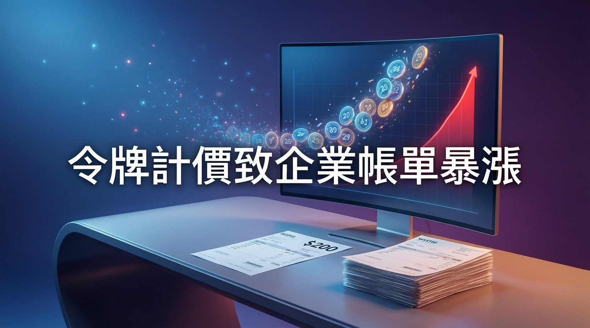

從 200 美元到數萬美元：Jevons 悖論正在 AI 算力市場真實上演

AI 業界正集體告別「吃到飽」時代。隨著主要實驗室從 2025 年 11 月起相繼推出新一代模型，Token 計價模式已成為行業標準，但代價是企業帳單價格急升——過去每月 200 美元的用戶，實際成本可達每月數萬美元，Jevons 悖論正在 AI 算力市場真實上演。
2023 年至 2025 年初的廉價實驗期已結束，企業願意補貼員工的 AI 使用習慣，直至看見帳單後才驚覺：部分每月 200 美元帳戶的實際成本可達「數萬美元一個月」。SemiAnalysis 估算，過去 200 美元的 Anthropic 計劃實際提供約 8,000 美元價值的 Claude Token，OpenAI 計劃則約 14,000 美元——那些日子已一去不返。
2025 年 11 月後，新一代模型將 AI 從「相當不錯」提升至「真正強大」，Context window 從數千 Token 急升至數百萬，Agentic 模式引入迴圈、重試、修正等機制，令用量「瘋狂」膨脹。FinOps Foundation 執行總監 Storment 指出：「Context window 從數千、數萬升至數百萬 Token，Agentic 模式出現後直線起飛。」
儘管 Token 單價持續下跌，但晶片和電力供應瓶頸正在形成價格底部。Intel CEO 表示 GPU 供應緊張預計 2027 年才有實質緩解。SAP 內部數據顯示，在某些月份縱使單位成本下跌，總支出仍可按月倍增。高盛估計，全球 Token 用量將從每日約 6 兆 Tokens，升至約 3.5 年內的每日 120 兆 Tokens，即使單價繼續下跌，24 倍的用量增長將遠超降價幅度。
SAP 的案例極具代表性：現有雲端監控工具完全看不透 LLM 的實際消耗，「就像只看礦石總重量來優化金礦開採」。SAP 被迫建立三個支柱的內部 AI FinOps 框架：支出可見度（跨模型、平台、業務單位追蹤）、經濟效益（Token 層級指標）、以及價值（連接 AI 支出與商業產出）。
「每個 Token 都必須證明自己的成本。我們已進入 Token 為主要測量單位的時代，Token 無處不在，正在推動全球 Token 經濟。」
— J.R. Storment，FinOps Foundation 執行總監業界共識是「吃到飽時代已結束」，企業必須接受 AI 的真實成本結構。在可預見的未來，晶片和電力供應將持續緊張，Price Per Token 的下跌空間有限，但 Token 總消耗量將持續爆炸性增長。對企業而言，如何將 AI 支出與實際商業價值掛鉤，將成為 CTO 和 FinOps 團隊最重要的課題。Jensen Huang 的名言「Token 工廠效益」正在成為企業 AI 投資的新衡量標準。Linux Foundation 正在組建 Tokenomics Foundation，為 Token 測量與分配制訂行業標準。
| 項目 | 傳統雲端定價 | AI Token 定價 |
|---|---|---|
| 基本單位 | CPU / GPU 時數、儲存 GB | Token（文字片段） |
| 定價透明度 | 相對透明，按規格收費 | 黑盒複雜，Token 隱藏諸多變數 |
| 成本可預測性 | 較穩定，可預算 | 極難預測，取決於模型、Agent 行為 |
| 供應鏈 | 標準化，硬體供應穩定 | GPU/電力供應持續緊張 |
| 用量波動 | 線性可測 | Agentic 模式下可指數爆發 |